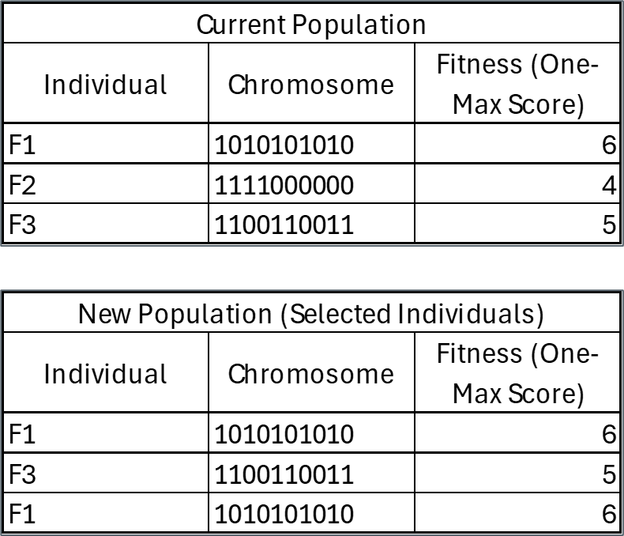
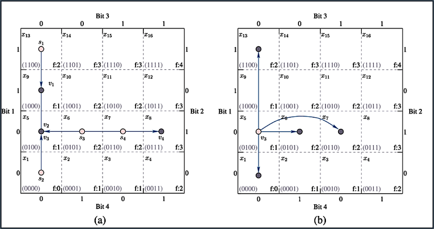
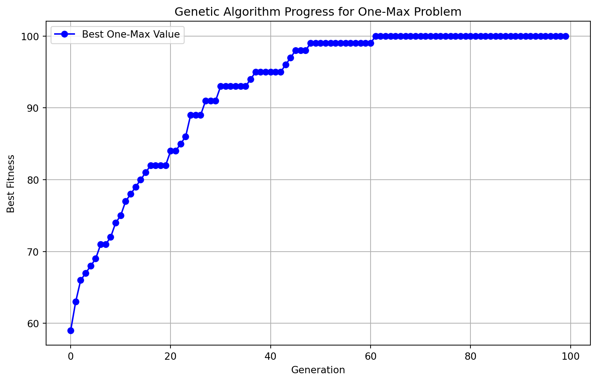

import numpy as np
import random
import matplotlib.pyplot as plt
import timeGenetic Algorithms
Genetic Algorithms
If you could ‘mutate’ one skill you have to be even better, which one would it be? And if you could ‘crossover’ with someone else’s skill, what would you pick?
Genetic Algorithms (GAs) are optimization techniques inspired by the process of natural selection by evolving solutions through selection, crossover, and mutation, just as genes pass traits through generations to optimize survival.
Optimization patterned on evolution
- Maintain a population of solutions.
- “Survival of the fittest”.
Evolution of an improving solution
- The population evolves over many generations.
- The fittest population members are more likely to reproduce and create offspring with their genetic material.
- Population fitness improves through the generations.
Genetic Algorithms Defined
- Objective: Evolve the population toward better solutions by mimicking evolutionary processes through selection, crossover, and mutation.
- Population: A set of candidate solutions (individuals) to the problem.
- Genes & Chromosomes:
- Each individual is represented by a chromosome, which is a string of genes.
- Chromosomes can be encoded in binary, real numbers, or symbolic representations.
- Generations & Evolution:
- Each iteration in the process is called a generation.
- A genetic algorithm evaluates multiple candidate solutions per generation.
- Fitness & Selection:
- Fitness represents the objective function value.
- Selection favors solutions with better fitness to pass their genes to the next generation.
- Algorithm Flow: Initial Population → Selection → Crossover → Mutation → New Population
GA Algorithm
Initialization: Randomly generate an initial population of individuals (solutions).
Selection: Choose the fittest individuals based on a fitness function that measures solution quality.
Crossover (Recombination): Combine parts of two parent solutions to create offspring (new solutions).
Mutation: Introduce small random changes to an individual to maintain diversity and explore new parts of the solution space.
Replacement: Updating the population by replacing the old population with the new one, ensuring improvement over generations.
Termination: Continue until a stopping condition (e.g., number of generations or convergence) is met.
Where Probability Comes into Play in a Genetic Algorithm
Probability plays a crucial role in several key steps of a genetic algorithm (GA), influencing selection, crossover, and mutation.
In selection, the probability of an individual being chosen as a parent is based on its fitness score. In Tournament selection, it involves probability by having random selection of competitors and the winning probability depends on the tournament size.
Crossover uses a probability threshold to determine how likely two parents will exchange genetic material to create offspring.
Mutation randomly alters a gene (bit flip, value swap, etc.) to introduce diversity.
In Replacement, after creating offspring, a GA decides which individuals stay in the population and in elitism, the best individuals are always carried forward, but in probabilistic replacement, offspring may replace parents based on fitness and a probability function.
The Relationships between Populations, Chromosomes, and Genes
- \(s\) represents the population (a set of solutions),
- \(s_i\) represents a chromosome (a solution),
- \(s_{ij}\) represents a gene (a subsolution),
- The number of chromosomes in the population (also called population size), and the number of subsolutions in a chromosome are also considered.
- The objective value of each chromosome will also be transformed to a value called the fitnes value calculated by a fitness function.

The Relationships between Parents and Children
- Each current solution selected by the selection operator is called a parent, while each new candidate solution is called an offspring during the convergence process.
- The parents s’ will be selected by the selection operator from the current population s at iteration t. The fitness values of all the chromosomes will also be calculated by the selection operator.
- Once the parents are selected by the selection operator, the crossover and mutation operators are used to generate a new population \(v\), which is called the offspring of the parents \(s’\).
- The offspring at iteration \(t\) will become the current population s of iteration \(t+1\). This is referred to as the reproduction process.
The strategies of the selection, crossover, and mutation operators of GA: (a) using only the selection operator and (b) using all the three operators.
GA will first randomly select some of the chromosomes based on the fitness value of each chromosome.
- shows the situation in which only the selection operator is used, i.e., no other transition operators are used. In this case, the distribution of all the chromosomes will be shifted and changed from left to right on the x-axis from generation t=1 to generation t=3.
This means that the average objective value of the population will be increased while the variance is decreased. If GA uses only the selection operator but none of the transition operators (e.g., crossover or mutation), it will not generate any new candidate solutions even though the average objective value of all the chromosomes is raised from 1.5 to 2.5.
- shows that if GA uses not only the selection operator to select better chromosomes for the next generation but also the crossover and mutation operators as the transition operators to generate new chromosomes for the population, this makes it possible for GA to find better candidate solutions. In this example, the average objective value of all the chromosomes will be increased from 1.5 to 3, while the best objective value will exceed 3.
Types of Selection
- Selection is a key process in Genetic Algorithms (GA) that chooses individuals for reproduction based on their fitness. There are various selection methods, each with different properties and effects on evolution.
- fitness-proportional selection (example shown here)
- tournament selection (shown and used here in python files)
- rank-based selection
- elitism
Fitness-Proportional Selection
The “Roulette Wheel” Strategy to Selection
Imagine a roulette wheel where each individual occupies a section proportional to its fitness. A random value (between 0 and 1) is generated, and the wheel is spun. The individual whose section the random value falls into is selected.
The probability of each chromosome being elected as a parent can be computed as follows: \[p_i = \frac{f_i}{\sum_{j=1}^{m} f_j}\]
Fitness \(f_i\) of member i as a proportion of sum of fitness of all population members, suggesting that \(p_i = \frac{\text{fit}}{\sum \text{fit}}\)
Assume three individuals with fitness values:
- \(F1 = 10\)
- \(F2 = 20\)
- \(F3 = 30\)
Their survival probabilities are as follows:
- p1= 10/((10+20+30))= .166$
- p2= 20/((10+20+30)) = .333$
- p3= 30/((10+20+30)) = .5$
Thus, individual 3 has the highest chance of being retained, but it’s still possible for less-fit individuals to survive.
We then generate a random number r in the range [0,1] and find the first individual whose cumulative probability exceeds r. For example, if we generate r=.4, we select F2 because .166 + .333 is around .5 and that is the first cumulative probability above .4. If we generate .7, we would select F3 because 1 is the nearest cumulative probability that exceeds it.
Tournament Selection
- Random Selection of Competitors
- For each individual to be selected, a random subset of num_players individuals is chosen from the population.
- A random choice function selects a number of players without replacement from the population.
- Choosing the Best Individual
- The fitness values of the selected individuals are compared.
- The individual with the highest fitness is chosen as the winner.
- This is done using np.argmax(fitness_vals[tournament]), which finds the index of the best individual in the subset.
- Building the New Population
- This process is repeated until a new population of the same size is formed.
- The best individuals from each tournament are added to selected_pop.
- Returning the Selected Population
- The function returns a new population consisting of individuals selected through tournament selection.
Tournament Selection Example
- 1st Selection Round
- Randomly select two individuals for the tournament: Suppose the tournament picks F1 and F2.
- Compare their fitness values:F1 (6) vs. F2 (4) → F1 wins.
- F1 is added to the new population.
- 2nd Selection Round
- Another tournament is held, randomly selecting F2 and F3.
- Compare their fitness values:
- F2 (4) vs. F3 (5) → F3 wins.
- F3 is added to the new population.
- 3rd Selection Round
- Another tournament is held, randomly selecting F1 and F3.
- Compare their fitness values:
- F1 (6) vs. F3 (5) → F1 wins.
- F1 is added again.
 ### Controlling Selection Pressure * Selection Pressure refers to the degree to which fitter individuals are favored for reproduction over less fit ones. * Larger tournaments (e.g., num_players >= 3) favor stronger individuals. + Increases selection pressure because there’s a higher chance that fitter individuals will be included and selected. + This can lead to faster convergence but may reduce genetic diversity, risking premature convergence to suboptimal solutions. * Smaller tournaments (e.g., num_players = 2) introduce more randomness. + Decreases selection pressure, allowing less fit individuals a better chance to be selected. This maintains diversity and promotes exploration but may slow down convergence.
Transition Operator
Crossover
The chart is structured as a grid, where each point represents a potential solution encoded in binary form.
- The labels Bit 1, Bit 2, Bit 3, and Bit 4 represent binary values in a 4-bit chromosome.
- The fitness function values, denoted as f(X), are assigned to each solution.
- Each solution (chromosome) is represented as a 4-bit string (e.g., 0000, 1100, etc.).
- The fitness function f(X) is computed for each chromosome and shown in the grid.
Evolution Path Without Crossover & Mutation: The arrows represent the movement of solutions through selection. Selection: The GA picks better solutions based on fitness. The search path (arrows) shows the improvement in fitness as the GA selects better candidates. In this case, movement is limited, leading to potential stagnation in local optima.
- Evolution Path With Crossover & Mutation: This plot includes crossover and mutation, introducing more diversity. Some arrows jump to different areas of the grid, indicating a recombination of genetic material. Crossover: Two parent solutions combine to produce offspring with mixed genes. Mutation: A small random change is applied to a gene, allowing exploration of new regions. This helps escape local optima and find better solutions.
Without crossover and mutation (a), the algorithm might get stuck in a local optimum.(b) With crossover and mutation, the search space is explored more effectively, leading to better solutions

Example of Crossover
F1 (Parent 1) = 10101 | 01010
F3 (Parent 2) = 11001 | 10011
Let’s choose crossover point or index = 5 , which means after the fifth bit
- Child 1 = 10101 | 10011 → “1010110011”
- Child 2 = 11001 | 01010 → “1100101010“
Now, these offspring can replace some individuals in the population or undergo mutation before the next iteration.
Mutation
- The mutate function introduces random changes (mutations) in the genetic algorithm to maintain diversity in the population. This prevents premature convergence to local optima.
- We generate a random number between [0,1] and compare it to the mutation_rate. If this random number is less than the mutation_rate, mutation occurs (bit flips).
How Often Mutation Occurs
Crossover is the primary driver of improvement in Genetic Algorithms, as it combines successful traits from parents.
Mutation acts as a secondary mechanism that introduces small random changes to explore new regions of the search space.
If mutation happens too frequently, the algorithm behaves more like a random search rather than an evolutionary process.
Setting a small mutation rate (~0.01 or lower) ensures that improvements from selection and crossover are not lost due to excessive randomness.
Note that in the example, I used .1, but we typically set a lower threshold than that.
Refining Genetic Algorithms
- GA Parameters Are Crucial: There’s no perfect setup for GA parameters. Experiment with combinations and monitor performance to find the best results for your specific problem.
- Population Size: For simple problems, 50 individuals may be enough, but for NP-hard problems with high dimensional search space, we need larger populations (e.g., 1000–2000 individuals)
- Mutation Rate: A low probability, typically 0.01 to 0.02 per gene.
- Number of Generations: For simple optimization problems, 50 is enough. However, for NP-hard problems with high dimensional search space, more generations (e.g., 1000–2000 generations).
- Selection Method: Can use tournament selection, fitness-proportional selection, rank-based selection, or elitism.
- Crossover rate: Can set the probability that selected parent solutions will undergo crossover to produce offspring, determining the proportion of the population that experiences genetic recombination in each generation. Most GA studies suggest crossover rates between 0.6 and 0.9 as effective
Fitness Function Alternatives in Heuristic Models
Fitness measures and selection mechanisms together determine the quality of offspring (solutions) in evolutionary or heuristic algorithms.
- While fitness measures are problem-specific, several reasonable alternatives often exist.
- It’s essential to tailor the fitness function to the specific goals of the problem (e.g., precision, speed, or robustness).
Selecting the Right Fitness Function: Some fitness measures work significantly better than others depending on the problem.
Leverage prior knowledge or insights from similar problems to guide fitness function selection.
Trial and Error: Expect to experiment with different fitness measures to find the one that best suits your specific problem.
Instead of a OneMax that counts the number of 1s, if our problem involved finding the closest match to a target solution (e.g., an image, a numeric function, or a specific binary pattern), you would need to replace or modify this fitness function using distance-based measures.
Common Distance Measures for Comparing Solutions to a Target Using an Image as an Example:
- Sum of Squared Differences: A measure of the total squared deviation of each pixel from the target, commonly used when larger errors should be penalized more.
- Euclidean Distance: The square root of the sum of squared differences, providing a more intuitive “distance” measure in the image space.
- Sum of Absolute Pixel Differences: A simpler alternative that sums the absolute differences for each pixel, often less sensitive to outliers.
- Maximum Absolute Pixel Difference: Focuses on the largest deviation, highlighting the worst pixel match.
Approaches to Optimize the Mutation Rate
- Hyperparameter Tuning: Use various fixed mutation rates and evaluate the performance of the GA over multiple runs to identify the best one. This is the simplest method but can be time-consuming as it involves manual experimentation.
- Dynamic Mutation Rate: Adjust the mutation rate dynamically during the evolution process. For example, you can start with a high mutation rate to encourage exploration and gradually reduce it as the algorithm converges.
- Self-Adaptive Mutation Rate: Introduce a mechanism in the GA where each individual in the population has its own mutation rate, which evolves over time. The mutation rate itself becomes part of the genetic material.
- Cross-Validation: Use techniques like k-fold cross-validation to evaluate the impact of different mutation rates and find the one that generalizes the best.
Advantages and Disadvantages of GA
Advantages
- Global Search: Capable of exploring large solution spaces and avoiding local optima.
- Flexibility: Can be applied to many types of optimization problems, including those with non-linear or non-differentiable objectives.
- Heuristic Nature: Useful when problem-solving methods like calculus-based optimization are not feasible.
Disadvantages
- Computationally Expensive – GAs often require many function evaluations, making them slow for complex problems.
- No Guarantee of Optimality – They may converge to suboptimal solutions or get stuck in local optima.
- Parameter Sensitivity – Performance depends on careful tuning of mutation rate, crossover rate, and population size.
- Lack of Interpretability – The evolutionary process doesn’t always provide clear insights into why a solution was chosen.
- Premature Convergence – The algorithm may lose diversity and settle on a poor solution early.
- Infeasibility for Some Problems – Constraints can be difficult to handle, leading to invalid solutions.
Comparing GA to SA
Population-based (GA) vs. Single Solution (SA)
- Compared to the single-solution-based metaheuristic algorithms (e.g., SA) that search only one solution at a time, GA searches for more than one solution at a time during the convergence process.
- Since GA will search for multiple directions or regions at a time, its search diversity will normally be much higher than single-solution-based metaheuristics that search for only one direction or region at a time during the convergence process.
- These two approaches are a fundamental distinction in how the search space is explored.
Population-based
- GA maintains and evolves a population of solutions. Works with a group of candidate solutions (a population) at each step.
- Evolutionary operations such as selection, crossover (recombination), and mutation are applied to create new generations of solutions.
- The search process involves diversity maintenance because multiple solutions evolve simultaneously.
Single Solution
- SA operates on a single solution and modifies it over time.
- Works with one candidate solution at a time.
- Starts with a single initial solution and iteratively moves to a new solution by applying small changes (perturbations).
- Accepts new solutions based on a probability function that depends on a temperature parameter (allowing uphill moves early in the process).
Exploration Strategy
- GA uses crossover and mutation to explore the solution space, encouraging diversity.
- Exploration and exploitation happen naturally through genetic operators—mutation introduces diversity (exploration), and selection rewards better candidates (exploitation).
- SA explores the space by making probabilistic changes to a single solution, allowing uphill moves early on (controlled by the temperature).
- Exploration and exploitation happen through a balance of random jumps (exploration) and greedy selection (exploitation).
Deterministic vs. Probabilistic:
- GA uses deterministic selection mechanisms, such as tournament selection, and a fixed mutation rate.
- Unlike purely stochastic methods (e.g., roulette wheel selection), tournament selection always picks the best candidate from the subset, making it more deterministic.
- The mutation rate is predefined and remains constant throughout the GA process (e.g., 1% or 2% of genes randomly mutate). This ensures steady convergence toward better solutions while maintaining some diversity.
- SA uses a temperature mechanism to probabilistically accept worse solutions early in the search.
Convergence:
- GA uses generations and selection pressure to converge on the best solution over time.
- GAs evolve solutions through multiple generations, where each generation consists of a population of candidate solutions.
- Selection pressure refers to how strongly better solutions are favored during reproduction.
- Higher selection pressure (e.g., elitism, tournament selection with large num_players) quickly promotes fitter solutions but risks premature convergence.
- Lower selection pressure (e.g., roulette wheel selection, or tournament with lower num_players) maintains more diversity but may slow down convergence.
- Higher selection pressure (e.g., elitism, tournament selection with large num_players) quickly promotes fitter solutions but risks premature convergence.
- Over successive generations, poor solutions are eliminated, and better solutions dominate the population.
- SA cools down gradually, converging based on the temperature schedule.
Summary
- The design of GA is much more complex than that of SA; as a consequence, it is not only more difficult to implement than SA, it also takes much more memory space. Even Holland himself was surprised that the GA field was quiet for decades, as described in the preface of the 1992 edition of his book.
- When this book was originally published I was very optimistic, envisioning extensive reviews and a kind of “best seller” in the realm of monographs. Alas! That did not happen. After five years I did regain some optimism because the book did not “die,” as is usual with monographs, but kept on selling at 100–200 copies a year. Still, research in the area was confined almost entirely to my students and their colleagues, and it did not fit into anyone’s categories
GA Example One Max
- Imports (same as SA model)
- Define Variables (notice the difference)
- num_bits — defined for One Max Problem
- pop_size — [Range: 10 - 500]
- A small population (e.g., 10-30) leads to faster but less diverse evolution.
- A large population (e.g., 100-500) ensures diversity but requires more computation.
- num_generations – [Range: 10 - 10,000]
- Fewer generations (e.g., 10-50) may lead to premature convergence.
- More generations (e.g., 1000+) allow fine-tuning but increase runtime.
- crossover_rate – [Range: 0.6 - .9]
- Probability of two parents performing crossover.
- A low rate (<0.5) may slow down convergence.
- A high rate (≥0.9) introduces excessive recombination, reducing solution stability.
- mutation_rate - [Range: 0.001 - 0.1]
- Very low values (<0.001) may cause stagnation.
- High values (>0.05) may introduce too much randomness, disrupting convergence.
- num_players – [Range: 2 - 10]
- A small value (2-3) maintains diversity.
- A high value (6-10) increases selection pressure, favoring stronger solutions but risking premature convergence.
# Define the necessary global variables
num_bits = 100
pop_size = 50
num_generations = 100
crossover_rate = 0.7
mutation_rate = 0.01
num_players = 3 - Evaluate (same as SA model)
# Evaluation Function (E)
def one_max(sol):
return sum(sol)- Initialization function (I)
- Same idea as before. Select a random starting point except now considering pop_size meaning if we have a pop size of 50, we want 50 starting points of size 100 containing either 0s or 1s.
# Initialization function (I)
def initialize_population(pop_size, num_bits):
return np.random.randint(0, 2, (pop_size, num_bits))- The loop runs len(population) times, ensuring that the new population has the same size as the original.
- The underscore (_) is used as a loop variable because we don’t need its value—it’s just for iteration.
- Randomly selects num_players individuals from the population (without replacement).
- Determines the best individual (highest fitness value) among them.
- Adds the best individual to the new selected population.
- Repeats the process until a new population of the same size is formed and then it is returned.
# Selection function using tournament selection (D)
def select(population, fitness_vals, num_players):
selected_pop = []
for _ in range(len(population)):
tournament = np.random.choice(len(population), num_players, replace=False)
best_idx = tournament[np.argmax(fitness_vals[tournament])]
selected_pop.append(population[best_idx])
return np.array(selected_pop)Crossover
Implements single-point crossover in a Genetic Algorithm (GA), which combines genetic material from two parents to create new offspring.
Loops through the population in pairs and ensures crossover occurs between adjacent individuals.
Applies crossover with a probability crossover_rate (e.g., 0.7 means 70% chance). If the condition fails, the pair remains unchanged.
Picks a random crossover point (ensures at least one gene swaps).
The right side of the chromosome (after crossover_point) is swapped between the two individuals.
Return outputs the modified population after crossover.
# Crossover function (T)
def crossover(population, crossover_rate):
new_population = population.copy()
for i in range(0, len(population) - 1, 2):
if random.random() < crossover_rate:
crossover_point = np.random.randint(1, num_bits)
new_population[i, crossover_point:], new_population[i + 1, crossover_point:] = (
population[i + 1, crossover_point:],
population[i, crossover_point:]
)
return new_population- Implements bit-flip mutation in a Genetic Algorithm (GA), introducing small random changes to maintain genetic diversity.
- Loops through each individual (chromosome) in the population.
- Loops through each bit (gene) in the chromosome.
- Each bit is mutated with probability mutation_rate (e.g., 0.01 means a 1% chance per bit). Small rate ensures that not all individuals mutate—only a small percentage of bits change.
- Flips the Bit (0 → 1 or 1 → 0)
- Return outputs the modified population after applying mutation.
# Mutation function (T)
def mutate(population, mutation_rate):
for i in range(len(population)):
for j in range(num_bits):
if random.random() < mutation_rate:
population[i, j] = 1 - population[i, j] # Flip the bit
return population- Main Loop
- This function implements a full Genetic Algorithm (GA).
- It evolves a population using selection, crossover, and mutation.
- It tracks the best solution and records fitness improvements over generations
# Genetic Algorithm function
def genetic_algorithm(num_bits, pop_size, num_generations, crossover_rate, mutation_rate):
population = initialize_population(pop_size, num_bits)
best_sol, best_value = None, 0
value_history = []
for generation in range(num_generations):
fitness_vals = np.array([one_max(ind) for ind in population])
best_idx = np.argmax(fitness_vals)
#Update solution (D)
if fitness_vals[best_idx] > best_value:
best_sol, best_value = population[best_idx], fitness_vals[best_idx]
value_history.append(best_value)
selected_pop = select(population, fitness_vals, num_players)
offspring_pop = crossover(selected_pop, crossover_rate)
population = mutate(offspring_pop, mutation_rate)
return best_sol, best_value, value_history- Main execution
start_time = time.time()
best_sol, best_value, value_history = genetic_algorithm(num_bits, pop_size, num_generations, crossover_rate, mutation_rate)
end_time = time.time()
execution_time = end_time - start_time- Output
# Output results (O)
print(f"Best solution: {best_sol}")
print(f"Best fitness (one-max value): {best_value}")
print(f"Execution time: {execution_time:.6f} seconds")
# Plot the progress of the genetic algorithm
plt.figure(figsize=(10, 6))
plt.plot(value_history, marker='o', linestyle='-', color='b', label='Best One-Max Value')
plt.title("Genetic Algorithm Progress for One-Max Problem")
plt.xlabel("Generation")
plt.ylabel("Best Fitness")
plt.grid(True)
plt.legend()
plt.show()Best solution: [1 1 1 1 1 1 1 1 1 1 1 1 1 1 1 1 1 1 1 1 1 1 1 1 1 1 1 1 1 1 1 1 1 1 1 1 1
1 1 1 1 1 1 1 1 1 1 1 1 1 1 1 1 1 1 1 1 1 1 1 1 1 1 1 1 1 1 1 1 1 1 1 1 1
1 1 1 1 1 1 1 1 1 1 1 1 1 1 1 1 1 1 1 1 1 1 1 1 1 1]
Best fitness (one-max value): 100
Execution time: 0.098030 seconds
GA Example Ackley
- The key components of a genetic algorithm include:
- Population: A set of candidate solutions.
- Selection: Selecting parents based on their fitness (Ackley function value) through tournament selection.
- Crossover: Combining parents to produce offspring.
- Mutation: Introducing random changes to maintain diversity.
- Fitness Function: The objective function we are minimizing, which is the Ackley function in this case.
Startup Commands
# Genetic Algorithm Ackley Example (1D)
import numpy as np
import random
import time
import matplotlib.pyplot as plt
# Define the necessary global variables
pop_size = 50
num_generations = 100
crossover_rate = 0.7
mutation_rate = 0.01
num_players = 3
best_obj_val = float('inf')
best_sol = None
# Ackley function (1D)
def ackley(x):
a = 20
b = 0.2
c = 2 * np.pi
term1 = -a * np.exp(-b * np.sqrt(np.mean(np.square(x))))
term2 = -np.exp(np.mean(np.cos(c * np.array(x))))
return term1 + term2 + a + np.exp(1)Initiation Function (I)
- A population of solutions is initialized using the init_ga function, where each solution is a random number between -10 and 10, as per the problem domain.
- The inclusion of the pop_size argument means that the function generates 50 rows, each containing one randomly chosen value between -10 and 10.
# Initialization function (I) to set the starting point
def init_ga(pop_size):
return np.random.uniform(-10, 10, (pop_size, 1))Evaluation Function (E)
- The evaluate function is used to compute fitness of each individual in every generation.
- This function Iterates over each individual (ind) in the population. It then computes the Ackley function value for that individual and produces a list of fitness values. The np.array() ensures that the output is a NumPy array for efficient computations.
# Evaluation function (E)
def evaluate(pop):
return np.array([ackley(ind) for ind in pop])Determination (D): Update Function
- This function, update_best_sol, is responsible for keeping track of the best solution found so far in a genetic algorithm. It compares the fitness values of the current population (curr_obj_vals) to the global best objective value (best_obj_val).
- It identifies the index (best_idx) of the individual in the current population with the lowest objective value (best fitness) using np.argmin.
- If this individual’s objective value is better (lower) than the current global best (best_obj_val), it updates best_obj_val to this new lower value and updates best_sol to the corresponding individual from the current population.
- This ensures that best_sol and best_obj_val always store the best solution and its fitness value found across all generations during the algorithm’s execution. The use of global allows the function to modify these variables outside its local scope.
# Update best solution function
def update_best_sol(curr_pop, curr_obj_vals):
global best_sol, best_obj_val
best_idx = np.argmin(curr_obj_vals)
if curr_obj_vals[best_idx] < best_obj_val:
best_obj_val = curr_obj_vals[best_idx]
best_sol = curr_pop[best_idx]Determination (D): Selection Function
- A subset of the population is selected for reproduction using a tournament selection process. This selection favors individuals with better fitness, helping to propagate good solutions.
- This code implements a tournament selection mechanism in a genetic algorithm to select individuals for reproduction based on their fitness values.
- For each individual in the current population (curr_pop), a tournament is conducted by randomly selecting a subset of individuals (of size num_players) without replacement.
- Within this subset, the individual with the best fitness value (lowest objective value in curr_obj_vals) is identified using np.argmin and added to the selected population (selected_pop). This process ensures that fitter individuals have a higher chance of being chosen, promoting the propagation of good solutions while maintaining diversity through randomness.
- The function returns the newly selected population as a NumPy array.
# Determination (D)
# Selection function using tournament selection
def select(curr_pop, curr_obj_vals, num_players):
selected_pop = []
for _ in range(len(curr_pop)):
tournament = np.random.choice(len(curr_pop), num_players, replace=False)
best_idx = tournament[np.argmin(curr_obj_vals[tournament])]
selected_pop.append(curr_pop[best_idx])
return np.array(selected_pop)Transition (T): Crossover Function
In genetic algorithms, the transition function refers to the combined operations of crossover and mutation that generate a new population (offspring) from the current population. The transition function first applies crossover to exchange genetic material between selected parent solutions, creating new offspring, and then applies mutation to introduce small random changes in the offspring, maintaining diversity and enabling exploration of the solution space. This ensures a balance between exploitation of good solutions (via crossover) and exploration of new solutions (via mutation).
Crossover: Pairs of solutions from the selected population are combined to create new offspring by mixing parts of the parent solutions.
A new population (new_pop) is initialized as a copy of the current population (pop). The loop iterates over the population in pairs. For each pair, a random number is generated using np.random.rand(). If this number is less than the crossover_rate, crossover occurs:
A crossover point is chosen randomly (here, using np.random.randint(0, pop.shape[1]), which specifies where the two parent solutions will exchange segments. The segments of the two parent solutions from the crossover point onward are swapped, creating two new offspring solutions.
If the random number is greater than the crossover_rate, no crossover occurs, and the parent solutions remain unchanged. The function returns the new_pop containing the modified population after applying the crossover operation.
# Transition function (T): Crossover and Mutation # Crossover function (T) def crossover(pop, crossover_rate): new_pop = pop.copy() for i in range(0, len(pop) - 1, 2): if np.random.rand() < crossover_rate: crossover_point = np.random.randint(0, pop.shape[1]) new_pop[i, crossover_point:], new_pop[i + 1, crossover_point:] = ( pop[i + 1, crossover_point:], pop[i, crossover_point:] ) return new_pop
Transition (T): Mutation Function
- Mutation: Random mutations are introduced in the offspring solutions to maintain diversity and avoid premature convergence.
- It introduces random changes to a population of solutions in a genetic algorithm. It iterates over each individual in the population (pop) and, with a probability specified by the mutation_rate, replaces the current individual with a new value randomly drawn from a uniform distribution between -10 and 10. This random alteration helps maintain diversity in the population, enabling the genetic algorithm to explore new areas of the solution space and avoid premature convergence. The modified population is returned at the end of the function. This introduces large jumps (not a small step size) since any value can be replaced.
# Mutation function (M)
def mutation(pop, mutation_rate):
for i in range(len(pop)):
if np.random.rand() < mutation_rate:
pop[i] = np.random.uniform(-10, 10)
return popMain Loop
- The algorithm iterates through a fixed number of generations (iterations). Each generation represents an iteration of evolving the population to improve the solutions.
- The new population (after crossover and mutation) replaces the old one for the next generation.
# Genetic Algorithm function (D)
def genetic_algorithm():
global best_sol, best_obj_val
pop = init_ga(pop_size)
for generation in range(num_generations):
obj_vals = evaluate(pop)
update_best_sol(pop, obj_vals)
selected_pop = select(pop, obj_vals, num_players)
offspring_pop = crossover(selected_pop, crossover_rate)
mutated_pop = mutation(offspring_pop, mutation_rate)
pop = mutated_pop
return best_sol, best_obj_valMain Execution
# Main execution
start_time = time.time()
best_solution, best_value = genetic_algorithm()
end_time = time.time()
execution_time = end_time - start_timeOutput (O)
# Output (O)
print(f"Optimal solution: {best_solution}")
print(f"Optimal value: {best_value}")
print(f"Execution time for Genetic Algorithm: {execution_time:.6f} seconds")
# Plot the Ackley function and genetic algorithm progress
x_values = np.linspace(-10, 10, 1000)
y_values = [ackley([x]) for x in x_values]
plt.figure(figsize=(10, 6))
plt.plot(x_values, y_values, label="Ackley Function", color='b')
plt.scatter(best_solution[0], best_value, color='green', label='GA Best Solution', s=100)
plt.title("Ackley Function in 1D with Genetic Algorithm Best Solution")
plt.xlabel("x")
plt.ylabel("f(x)")
plt.legend()
plt.grid(True)
plt.show()Optimal solution: [0.0492074]
Optimal value: 0.32174722109168785
Execution time for Genetic Algorithm: 0.105517 secondsComparison GA/SA with Ackley FUnction
- To compare Simulated Annealing (SA) with Genetic Algorithms (GA), we can implement a Genetic Algorithm for the same optimization problem (Ackley function) and then compare the two approaches based on:
- Performance: Compare the final optimized values.
- Convergence Speed: How fast each algorithm converges to a solution.
- Exploration vs. Exploitation: How each method balances searching new areas (exploration) versus refining the current solution (exploitation).
- Population-based vs. Single Solution:
- GA maintains and evolves a population of solutions.
- SA operates on a single solution and modifies it over time.
- SA Model:
- Optimal x: 0.0021715903903449796
- Optimal value: 0.00893749448894754
- Execution time: 0.014006 seconds
- GA Model:
- Optimal solution: [-0.06420558]
- Optimal value: 0.4648604493269599
- Execution time for Genetic Algorithm: 0.099029 seconds
Using AI
- Use the following prompt on a generative AI, like chatGPT, to learn more about the topics covered.
- Concept of Genetic Algorithms: Explain the biological inspiration behind Genetic Algorithms. How do the concepts of selection, crossover, and mutation in GA mimic natural evolution?
- Write a Python implementation of a Genetic Algorithm to minimize a simple quadratic function \(f(x) = x^2\) include steps for initialization, selection, crossover, mutation, and termination. How does the choice of parameters like mutation rate and population size affect the outcome?
- Comparison with Simulated Annealing: Compare Genetic Algorithms to Simulated Annealing for solving the Ackley function. Discuss their strengths and weaknesses in terms of convergence speed, exploration, and exploitation.
- Real-World Applications: Identify three real-world problems where Genetic Algorithms are commonly used (e.g., scheduling, vehicle routing, or portfolio optimization). Why are GAs particularly suited for these problems?
- Parameter Tuning: Discuss how to determine the optimal mutation rate and crossover probability for a given problem. Explore techniques like self-adaptive mutation rates and their impact on performance.
- How does the diversity of the population change as the genetic algorithm progresses over generations?
Conclusions
- Our discussions on Genetic Algorithms (GA) provide a comprehensive exploration of one of the most versatile and biologically inspired optimization techniques. GA mimics the principles of natural selection and evolution, employing operators like selection, crossover, and mutation to iteratively refine solutions within a population. The method’s ability to balance exploration (via genetic diversity) and exploitation (via selection pressure) makes it particularly effective for solving complex, non-linear, and multimodal optimization problems. Key advantages include its flexibility to adapt to a wide range of applications, such as scheduling, portfolio optimization, and function minimization, and its capacity to avoid local optima by maintaining a diverse population. However, success depends heavily on careful parameter tuning, including population size, mutation rate, and crossover probability. By comparing GA with other methods like Simulated Annealing, the slides highlight GA’s strengths in global search and parallel exploration. Ultimately, Genetic Algorithms emerge as a powerful heuristic, especially when the optimization landscape demands both creativity and robustness in the search for solutions.